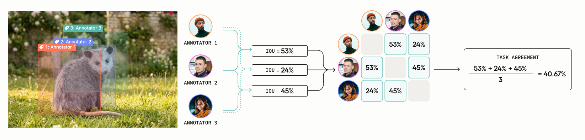
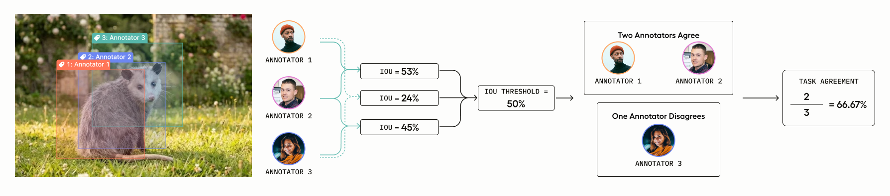
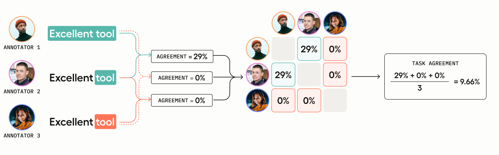
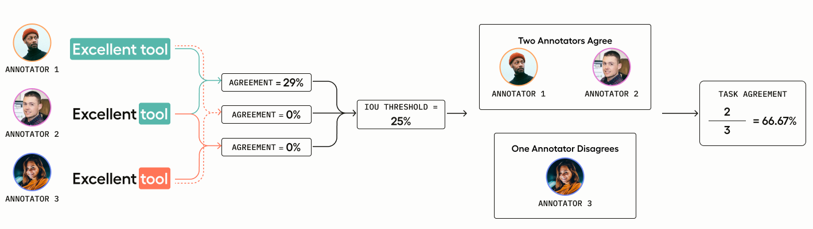
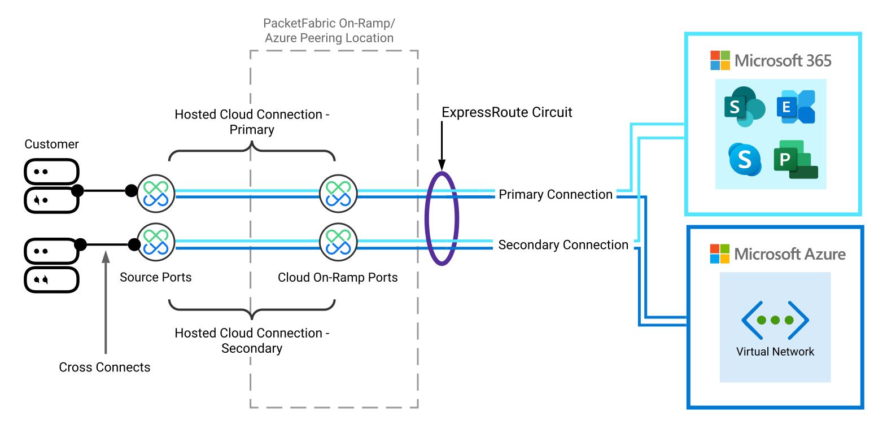
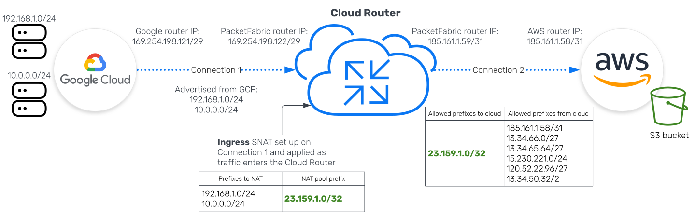
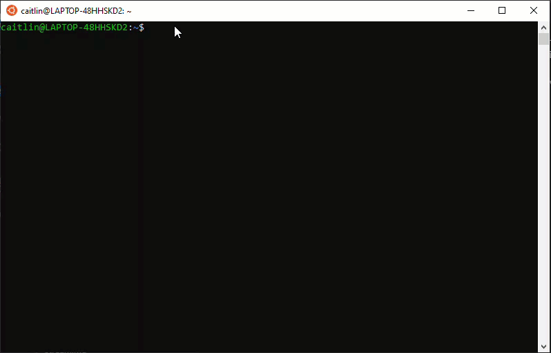
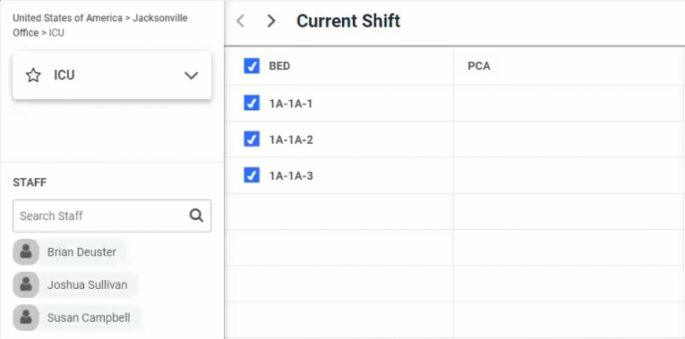
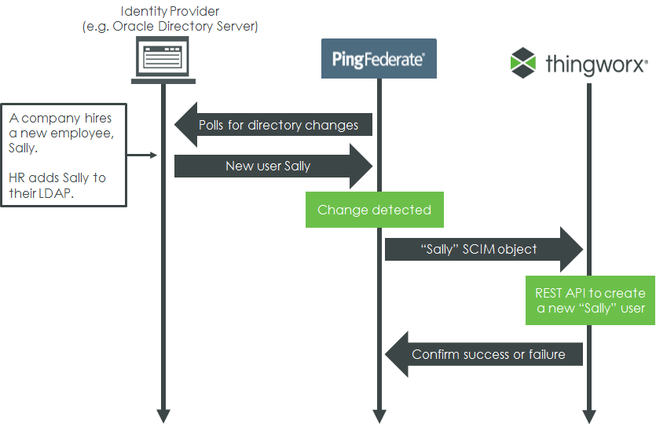

A set of diagrams to show how inter-annotator agreement is calculated for non-categorical labels (bounding boxes and text spans). Each one follows the same three annotators from their labels, through per-pair scores, to the final task agreement, so readers can compare the two methods side by side.
See it in context: Task agreement and how it is calculated
TOOLS: Figma




A short video to demonstrate how to use the Prompts tool on the Label Studio Enterprise platform.
See it in context: Draft and run prompts
TOOLS: Screen Studio
A short video for the release note to demonstrate a new Multichannel tag.
See it in context: Group multiple time series in one channel
TOOLS: Screen Studio
A diagram to demonstrate how the twin virtual circuits work in an ExpressRoute circuit.
See it in context: Microsoft ExpressRoute Overview
TOOLS: Lucidchart

A more complex diagram designed to show how NAT is oriented (leaves/enters) the Cloud Router.
See it in context: Cloud Router NAT
TOOLS: Lucidchart

A screenshot would not properly capture streaming events, so I created a simple GIF.
See it in context: Streaming Events
TOOLS: Techsmith Snagit

An animated GIF illustrating how drag-and-drop can create multiple staff assignments at once.
TOOLS: TechSmith Snagit, Camtasia, compressor.io

A simple swimlane diagram to illustrate how SCIM can manage users.
TOOLS: Microsoft PowerPoint (PPTX files were compatible with the tools used by our localization team.)
